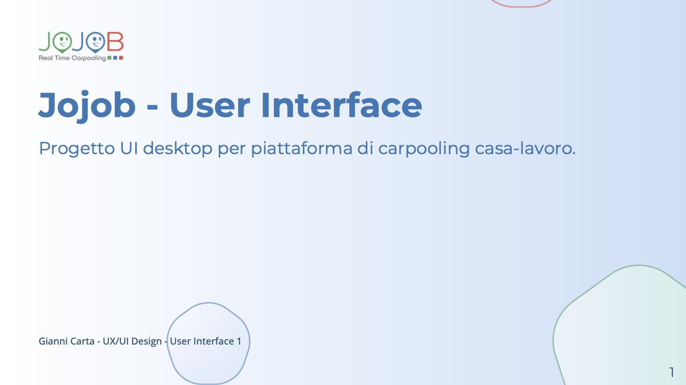
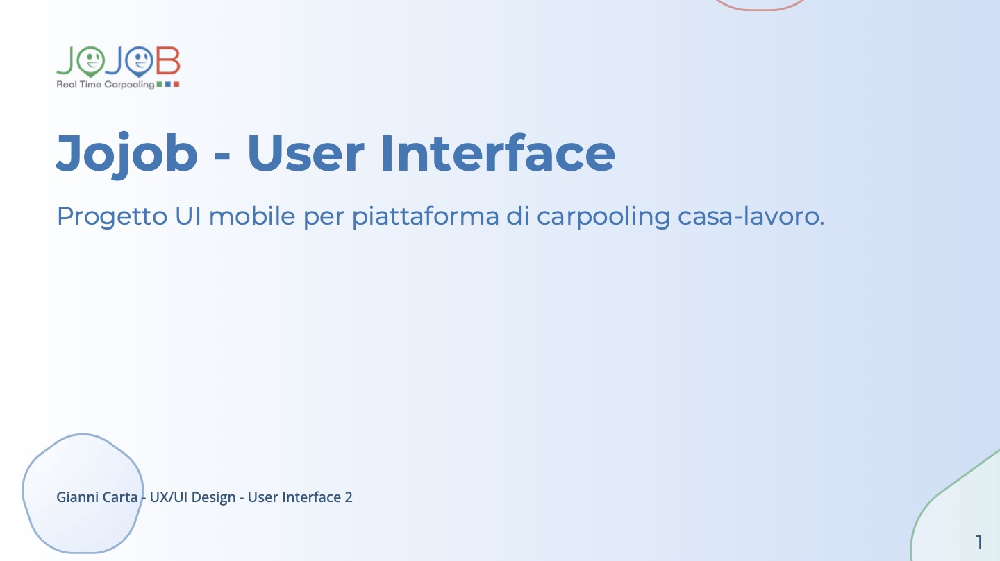
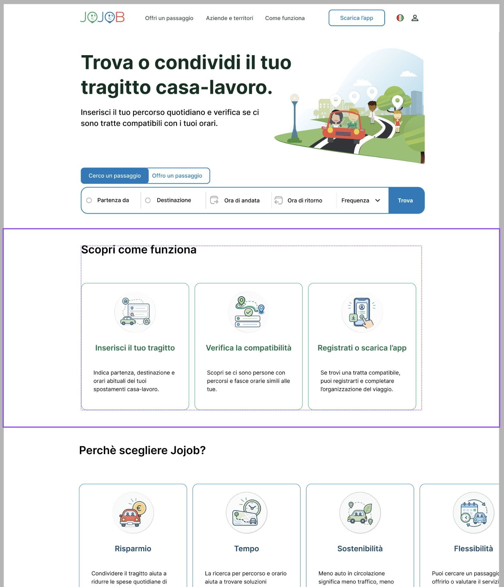

Proposta di valore
Rendere immediatamente comprensibile il servizio.
Case study · UX/UI
Redesign dell’esperienza di carpooling casa-lavoro: dalla comprensione del servizio alla ricerca della tratta, fino alla compatibilità tra utenti e alla progettazione dell’interfaccia finale.

01 · Overview
Jojob è una piattaforma dedicata al carpooling per gli spostamenti casa-lavoro. Il progetto ha analizzato l’esperienza esistente e ripensato il percorso principale per renderlo più chiaro, accessibile e prevedibile.
Rendere immediatamente comprensibile il servizio.
Portare il task principale nella prima schermata.
Permettere di valutare percorso e disponibilità prima della registrazione.
Rafforzare leggibilità, gerarchia e segnali di affidabilità.
02 · Discovery
La fase di Discovery ha raccolto e organizzato le informazioni necessarie per comprendere il servizio, il contesto competitivo e i bisogni degli utenti. I due progetti completi sono disponibili come approfondimento.
03 · Accessibilità
L’analisi di accessibilità ha osservato gerarchia, contrasto, leggibilità, call to action, target interattivi e navigazione da tastiera, traducendo le criticità in indicazioni progettuali.
04 · Wireframing
Gli insight raccolti sono stati trasformati in architettura dell’informazione, flussi e wireframe. Il percorso principale porta dalla ricerca della tratta ai risultati compatibili e al contatto.
05 · UI Design
La fase UI ha trasformato la struttura in interfacce ad alta fedeltà, lavorando su gerarchie, componenti, tipografia, colore e adattamento responsive.

UI Design

UI Design

06 · Risultato
Il redesign rende più evidente il primo passo, anticipa la verifica della compatibilità e costruisce un percorso più prevedibile. Il processo ha mostrato quanto gerarchia, spaziatura e coerenza dei componenti possano migliorare l’esperienza più di un aumento della complessità visiva.
Torna ai lavori →